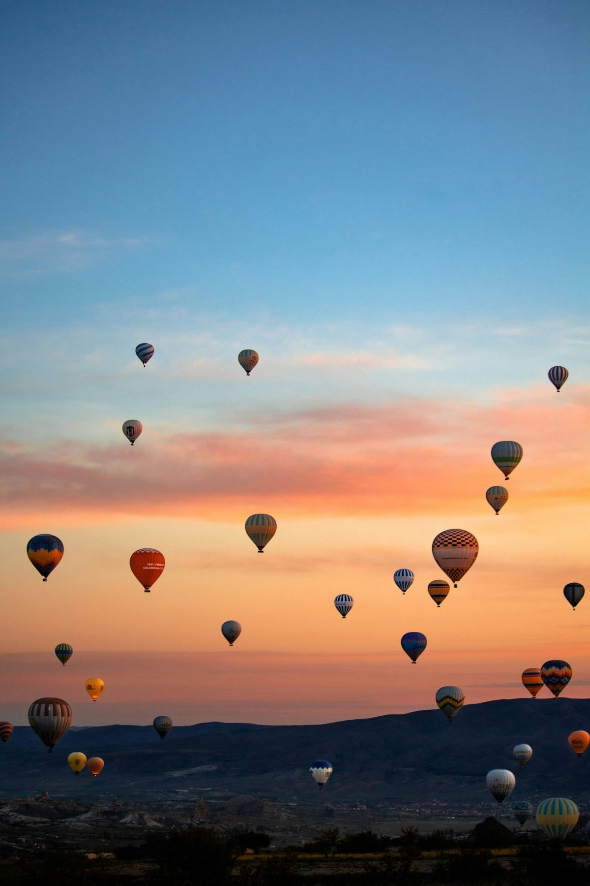

Tvoj lokalni vodič za nezaboravne trenutke.
Imamo ideju! Savršen plan za 2h u Kotoru, prilagođen tvom vremenu i raspoloženju.

Opusti se uz odličnu kafu u srcu Starog grada. Ovo je prva stanica tvog plana, pa imaš dovoljno vremena da uživaš bez žurbe.
⭐ 4.8 · Sačuvano danas
⭐ 4.9 · Sačuvano juče